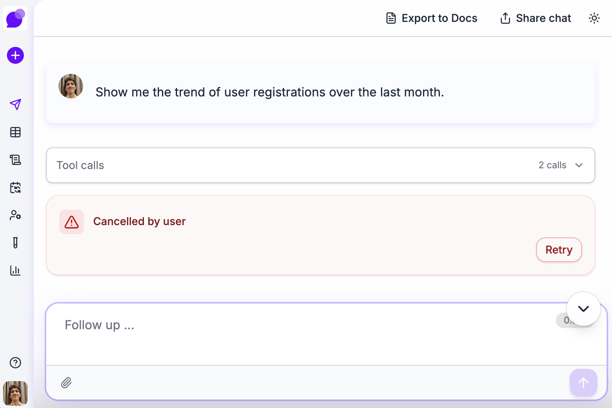
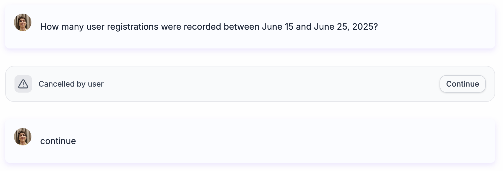
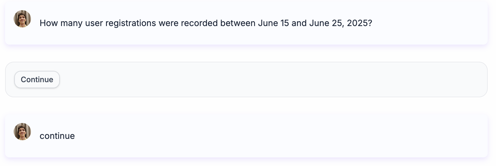

What does the creator of Kotlin build next?
Andrey Breslav — who designed Kotlin at JetBrains and watched it become Google's default for Android — started Codespeak (codespeak.dev).



The core idea — code is a noisy low-level representation of our intents. The real source of truth should be stripped of the syntax grease we use to bend over for the compiler. Structured English that captures what the software does and why, compiled into code by LLMs.
I gave it a shot on production code.
Our app has an error banner. When a user refreshes the page, they see a bright red card with a warning triangle and a "Retry" button. It looks like something catastrophic happened.
Three changes:
- STOP SHOUTING AT THE USER — muted, calm, "Continue" instead of "Retry"
- Strip out the error message and anxiety triangle on page reloads
- Harder: make streaming charts render progressively instead of waiting for complete JSON
codespeak takeover — point it at a file (60 lines of TypeScript, 30+ Tailwind classes, Zustand stores) and it generates a markdown spec. It didn't describe rounded-2xl border border-red-200/60 bg-red-50/80. It wrote: "a rounded card with a red color scheme." But preserved every behavioral detail. A language designer's sensibility — essential vs accidental complexity.
Edit the spec in English. codespeak build. Burns your Claude Opus API tokens in an ugly nerdy black-and-green terminal agent. Result — working code. The chart streaming involved partial JSON parsing and state management — solved in one paragraph of spec. I'd failed to get this working with a direct LLM prompt before.
All three changes are in production now.
Codespeak is alpha. Specs import other specs with dependency tracking. codespeak coverage took a project from 84% to 100% test coverage in two iterations. Specs coexist with hand-written code — migrate file by file. Published cases show 6-10x code reduction, all passing existing test suites.
Yes it has problems... but that's an alpha.
You're probably shouting THE BITTER LESSON: every time we hand-engineer features, end-to-end learning beats us. Edge detectors → learned features. Grammar rules → transformers. Codespeak's specs are agent-crafted intermediate representations — OpenAI and Anthropic will eat them alive.
But how do you articulate what you want the agent to do? The optimal representation between intent and code isn't human-readable at all — it's probably quantized vectors. The "spec" becomes a learned embedding you query on demand, generating a view tailored to your skill level and your current problem. A junior and a senior architect see different specs for the same system, both accurate, both useful.
Codespeak cannot do that... yet.
In the end — I shipped real changes with it.